Chapter 3 Picturing & Describing Data
3.1 End-of-Chapter Exercises
3.1.1 Calculating decriptive statistics
3.1.1.1 Description
The following table contains a set of ACT scores from a sample of college students. The ACT is a standardized college-readiness exam taken by many U.S. students; scores can range fro 1 to 36.
| Student | ACT | \((X~i~ - M)\) | \((X~i~ - M)^2\) |
|---|---|---|---|
| 1 | 26 | ||
| 2 | 24 | ||
| 3 | 28 | ||
| 4 | 31 | ||
| 5 | 20 | ||
| 6 | 27 | ||
| 7 | 18 | ||
| 8 | 17 | ||
| 9 | 21 | ||
| 10 | 29 | ||
| 11 | 24 | ||
| Total |
- Location: Calculate the mean (M), median, and mode for this sample.
- Spread: Calculate the standard deviation (s), range and interquartile range for this sample. For s, fill in the two columns on the right in the table above, then use the formula to calculate s yourself.
3.1.1.2 Solution
With summary there is a covenient command in R to print out some of the most important descriptive statistics.
## Min. 1st Qu. Median Mean 3rd Qu. Max.
## 17.00 20.50 24.00 24.09 27.50 31.00The summary command does not display mode, variance, standard deviation and IQR. With the exception of mode all these command are included in the base R installation. To calculate the mode we need modeest, a package for mode estimation.
In R there are for the same task often several solution possible. I will add some of them.
| Parameter | Command in R | Value |
|---|---|---|
| Mean M | round(mean(ACT),2) |
24.09 |
| Median (V1) | median(ACT) |
24 |
| Median (V2) | fivenum(ACT)[3] |
24 |
| quantile (V3) | quantile(ACT)[[3]] |
24 |
| Mode | mfv(ACT) |
24 |
| Variance | round(var(ACT),2) |
21.29 |
| s | round(sd(ACT),2) |
4.61 |
| Range (V1) | range(ACT) |
17, 31 |
| Range (V2) | fivenum(ACT)[c(1,5)] |
17, 31 |
| IQR | IQR(ACT) |
7 |
| Q1,Q3 | fivenum(ACT)[c(2,4)] |
20.5, 27.5 |
To populate the table programmatically I will convert ACT to a data frame ACT_df = as.data.frame(ACT) resp. in a tibble as tibbles has some advantages over data frames. (The tibble package is part of the tidyverse.)
> ### Calling `as_tibble()` on a vector is discouraged, because the behavior is likely to change in the future. I
> ### am using instead the `enframe` command
> ACT_df <- enframe(ACT, name = "Student", value = "ACT")> ## using the pipe operator (https://magrittr.tidyverse.org/) using mutate from the dplyr package which is also
> ## included in tidyverse
> ACT_df <- ACT_df %>% mutate(`Xi-M` = round(ACT_df$ACT - mean(ACT_df$ACT), 2), `(Xi-M)^2` = round(`Xi-M`^2, 2))
>
>
> ACT_df <- ACT_df %>% adorn_totals("row") # janitor package to add totals
> ACT_df[12, 3] <- " " # summing up Xi-M does not make sense
>
>
> knitr::kable(ACT_df, booktabs = TRUE, caption = "ACT Scores for Exercise 1 of Chapter 3", align = "rrrr")| Student | ACT | Xi-M | (Xi-M)^2 |
|---|---|---|---|
| 1 | 26 | 1.91 | 3.65 |
| 2 | 24 | -0.09 | 0.01 |
| 3 | 28 | 3.91 | 15.29 |
| 4 | 31 | 6.91 | 47.75 |
| 5 | 20 | -4.09 | 16.73 |
| 6 | 27 | 2.91 | 8.47 |
| 7 | 18 | -6.09 | 37.09 |
| 8 | 17 | -7.09 | 50.27 |
| 9 | 21 | -3.09 | 9.55 |
| 10 | 29 | 4.91 | 24.11 |
| 11 | 24 | -0.09 | 0.01 |
| Total | 265 | 212.93 |
This table has not the same information as in the book p.505. At first I tried to build it similar but this complicates everything as it is not suitable for using R.
3.1.2 Loading our first data set
3.1.2.1 Inspecting the itns-package
In the task description of the itns-book you will find the following passage (p.68):
From the book website, load the
College_Survey_1data set. This is a large data set containing data from a wide-ranging survey of college students. You can read the code book for the data file to get a better sense of the different variables measured.
But you do not need to load the file into R as there are all these data sets already included in the itns package, which we already have loaded into R. In this package the data sets are already cleaned and made compatibel with the R language. This is a great advantage and helps us to concentrate just on the exercises. As in real life you will not have your data already cleaned, I will in the last section of this chapter explain some of the necessary procedures you whould normally apply to every new data set you want to work with.
In the documentation the name of the College_Survey_1 data set in the itns pacakge is college_survey1. When you have already the package attached you can find this out with the command ls("package:itns") our better in RStudio with the console command help(package = itns). (Our you can also go to the “Packages” tab and search for “itns”) The former displays the objects of the package in your RMarkdown file, the latter opens up the documentation page in the RStudio help tab.
## [1] "altruism_happiness" "anchor_estimate" "anchor_estimate_ma" "body_well"
## [5] "campus_involvement" "clean_moral_johnson" "clean_moral_schall" "cohensd_rm"
## [9] "college_survey1" "college_survey2" "dana" "emotion_heartrate"
## [13] "exam_scores" "flag_priming_ma" "home_prices" "home_prices_holdout"
## [17] "labels_flavor" "math_gender_iat" "math_gender_iat_ma" "natsal"
## [21] "organic_moral" "pen_laptop1" "pen_laptop2" "power_performance_ma"
## [25] "rattan" "religion_sharing" "religious_belief" "self_explain_time"
## [29] "sleep_beauty" "stickgold" "study_strategies" "thomason1"
## [33] "thomason2" "thomason3" "videogame_aggression"Further on I will only describe the RStudio version. RStudio is the most productive R IDE (Integrated Development Environment) I know about. It is free and works with many platforms. You can download the lastest version at https://www.rstudio.com/products/rstudio/download/#download
To detect the name of the variables (= columns) and the data structure we use the RStudio View command:
3.1.2.2 Reading the codebook for college-survey1
Even the data set is already included in the itns package, you still will need to go to the companion website and download the data set as you will need the code book to understand what all the variables and codes mean. To save you time I have it included here.
But keep in mind that the variable names in the college-survey1 are slighty different than in College_Survey_1. The main difference is that the R variables are not capitalized. As R is case sensitive, we need always to look up the correct names for the R variables (columns).
Survey of College Attitudes
This is data from survey of college students. The survey was put together as a classroom project, and measures a number of different constructs. Note that not all participants elected to answer all items–blanks represent scales that were not completed by that participant.
- ID -
- Gender : Self-reported gender, Male or Female
- Gender_Code: 1 for Female, 2 for Male
- Age: Self-reported age in years
- School_Year - Self reported, First-year, sophomore, junior, senior, or post-bac
- School_Year_Code: 1 = first-year, 2 = sophomore,3 = junior, 4 = senior, 5 = post-bac
- Transfer: No if student did not transfer to current school, Yes if student transferred to current school
- Transfer_Code: 0 = not a transfer student, 1 = transfer student
- Student_Athlete: self-reported, non-athlete, or athlete in or out of season
- Student_Athlete_Code: 0 = not a student athlete, 1 = student athlete
- Wealth_SR: Single item: “Considering all the others students you’ve met here at SCHOOL NAME how would you rank yourself in terms of wealth?” rated on scale from 1 (well below average) to 5 (well above average)
- GPA: Self-reported GPA, 0-4point scale
- ACT: Self-reported ACT score
- Subjective_Well_Being: Average of 5-item satisfaction with life scale by Deiner, rated on scale from 1 (strongly disagree) to 7 (strongly agree). Sample item: “I am satisfied with my life”. See http://internal.psychology.illinois.edu/~ediener/SWLS.html
- Positive_Affect: Average of 10-item scale of frequency of experiencing positive emotions over the past week, rated on a scale from 1 (verly slightly to not at all) to 5 (extremely). Sample items: Enthusiastic, Proud, Inspired…Part of the PANAS scale.
- Negative_Affect : Average of 10-item scale of frequency of experiencing negative emotions over the past week. Rated on scale from 1( very slightly to not at all) to 5 (extrmely). Sample items: Nervous, irritable, hostile, etc>0. Part of the PANAS scale. See http://booksite.elsevier.com/9780123745170/Chapter%203/Chapter_3_Worksheet_3.1.pdf
- Relationship_Confidence- Average of a 7-item scale of confidence in having romantic relationships, rated on a scale from 1 (not at all characteristic of me) to 5 (very characteristic of me). Sample item: "I am a good partner for a romantic relationship)
- Exercise - Exercise score on the Godin Leisure-Time Exercise Quetionnaire. This asks participants to rate how often during a regular week they engage in strenuous, moderate, or light exercise. A total score is calculated as 9strenuous + 5moderate + 3*light. See http://dapa-toolkit.mrc.ac.uk/documents/en/God/Godin_Leisure-Time_Exercise_Q.pdf
- Academic_Motivation_Intrinsic - Average score on 6-item measure of intrinsic acadmic motivation. Participants respond to the prompt “Why do you go to college” and respond to each item with a rating from 1 (does not correpond at all) to 7 (corresponds exactly). Sample item: “For the intense feelings I experience when I am communicating my own ideas to others”. See http://www.er.uqam.ca/nobel/r26710/LRCS/scales/emec_en.doc
- Academic_Motivation_Extrinsic - Average score on 7-item measure of extinsic acadmic motivation. Participants respond to the prompt “Why do you go to college” and respond to each item with a rating from 1 (does not correpond at all) to 7 (corresponds exactly). Sample item: “Because with only a high-school degree I would not find a high-paying job later one”. See http://www.er.uqam.ca/nobel/r26710/LRCS/scales/emec_en.doc
- Academic_Motivation_Amotivation - Average score on 2-item measure of extinsic acadmic motivation. Participants respond to the prompt “Why do you go to college” and respond to each item with a rating from 1 (does not correpond at all) to 7 (corresponds exactly). Sample item: “Honestly, I don’t know; I really feel that I am wasting my time in school.”. See http://www.er.uqam.ca/nobel/r26710/LRCS/scales/emec_en.doc
- Inteligence_Value - Measure of degree to which participant values intelligence, rated on a scale from 1 (strongly agree) to 5 (strongly agree). Sample item: “Intelligence greatly contributes to success in life.”. See
- Raven_Score - % correct out of 8 items on the Raven Progressive Matrix Scale, a scale of logical thinking/IQ. Adapted from https://www.raventest.net/.
3.1.3 Distribution of positive affect scores
Now we can start to visualize the different distribution as described in 2a-e (pp.68f.)
3.1.3.1 Visualize the distribution
Visualize the distribution of positive affect scores (Positive_Affect). Students rate how often they experience each of 10 positive emotions, using a scale from 1 (not at all) to 5 (extremely), then the score is the average of the 10 ratings.
The reference in the codebook to the PANAS scale is not valid anymore. But I found an explanation and a template with the questionaire on the toolsHero website.
Following the recommendation by the paper Getting Started with the New Statistics in R (p.7) I am going to use the ggplot2 package. See details to the command at the ggplot2 web page.
3.1.3.2 Histogram
## `stat_bin()` using `bins = 30`. Pick better value with `binwidth`.## Warning: Removed 8 rows containing non-finite values (stat_bin).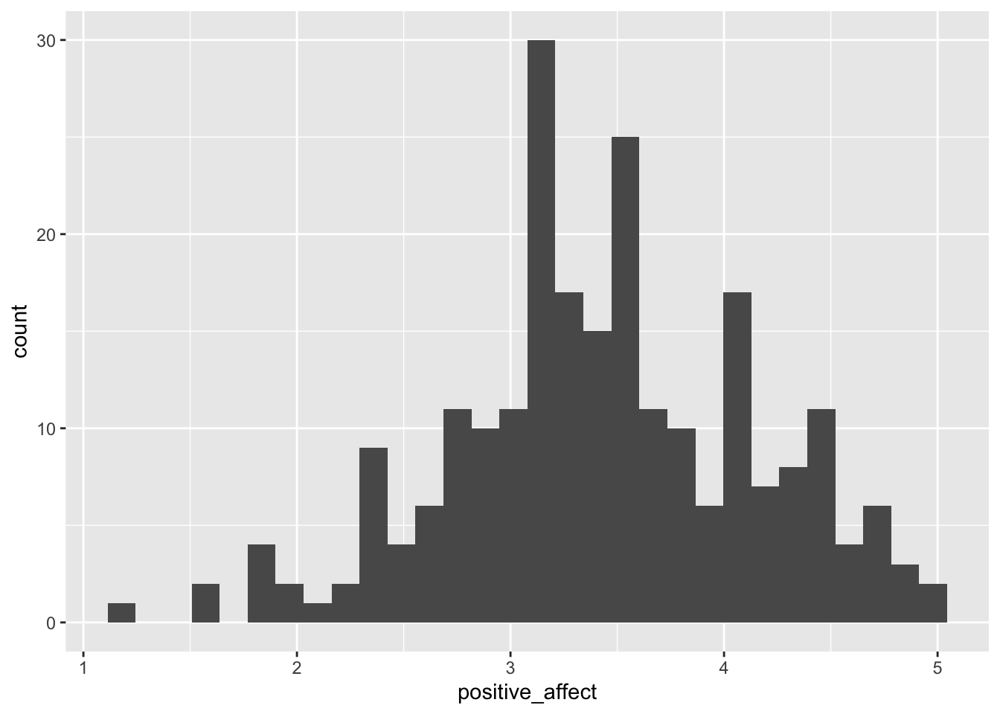
After executing the above command ggplot2 gives us a notification and a warning message:
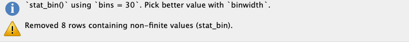
3.1.3.2.1 Addressing the notification
binwidth parameter to get a feeling about the effects of the visualization of the distribution.
I chose a binwidth of .1, meaning that I will get 40 bins as the scale goes from 1-5.
3.1.3.2.2 Addressing the warning
ggplot2 warns us that there are data missing in 8 records. Look at the RStudio data browser and scroll down to check it. You will see that at the end of the file, starting with record number 231 some data are missing (“not availabe” = NA). In our next visualization we tell R to remove these missing values silently and to use the binwidth of .1.
> ggplot(college_survey1, aes(positive_affect)) + geom_histogram(binwidth = 0.1, na.rm = TRUE) # always experiment with the binwidth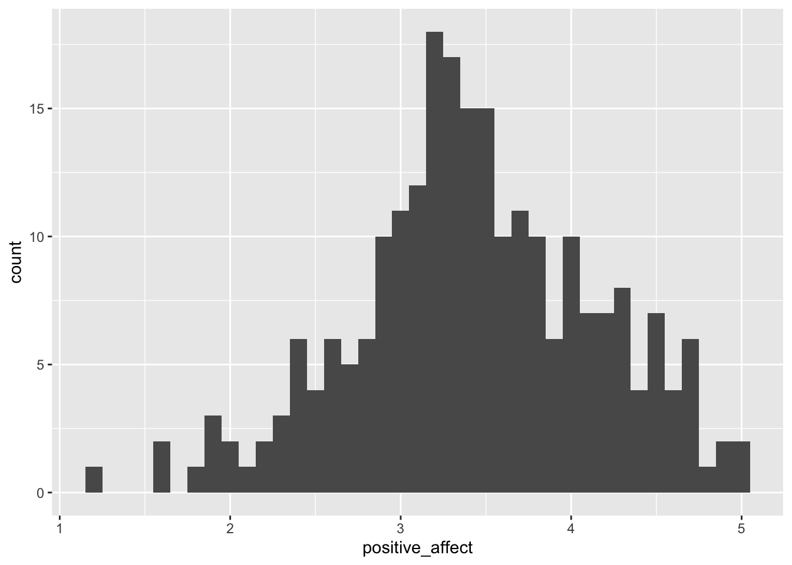
3.1.3.3 Dot plot
For more information about this command see: https://ggplot2.tidyverse.org/reference/geom_dotplot.html
> ggplot(college_survey1, aes(positive_affect)) + geom_dotplot(binwidth = 0.1, na.rm = TRUE, method = "histodot",
+ stackratio = 1.1) + coord_fixed(ratio = 2)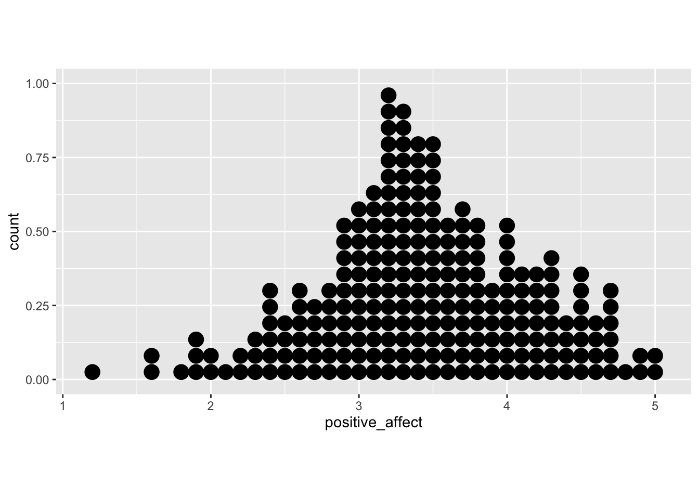
It is a notorious problem with dot plots produced by ggplot2 that the y-axis is normalized and displays meaningless values between 0 and 1. I found recently a workaround posted at StackOverflow.
> # library(ggplot2) ## already loaded with tidyverse
> library(dplyr) ## already loaded with tidyverse
> library(ggExtra)
>
> yheight = 20 # taken from the histogramm
> # basic dotplot (binwidth = the accuracy of the data)
> dotchart = ggplot(college_survey1, aes(x = positive_affect), dpi = 600)
> dotchart = dotchart + geom_dotplot(binwidth = 0.1, method = "histodot", dotsize = 1, fill = "blue", na.rm = TRUE)
>
> # use coor_fixed(ratio=binwidth*dotsize*max frequency) to setup the right y axis height.
> dotchart = dotchart + coord_fixed(ratio = 0.1 * yheight)
>
> # add tick mark on y axis to reflect frequencies. Note yheight is max frequency.
> dotchart = dotchart + scale_y_continuous(limits = c(0, 1), expand = c(0, 0), breaks = seq(0, 1, 1/yheight), labels = seq(0,
+ yheight))
>
> # remove x y lables and remove vertical grid lines
> dotchart = dotchart + labs(x = NULL, y = NULL) + theme_bw() + removeGridX()
> dotchart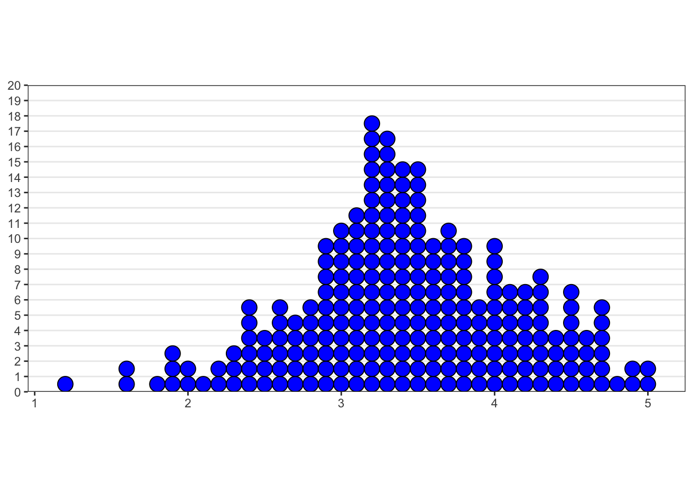
3.1.3.4 Interpretation
Describe the distribution you see, noting the location, spread, and shape, and the number of major peaks.
## Min. 1st Qu. Median Mean 3rd Qu. Max. NA's
## 1.200 3.000 3.400 3.433 3.900 5.000 8## [1] 0.71Positive affect is relatively normally distributed—there is a single, strong peak and the distribution is fairly symmetrical. The mean score of 3.43 is a little above the midpoint of the 1–5 scale, indicating that students on average feel moderate levels of positive affect. There is wide spread, with s = 0.71 and scores ranging across almost the full range.
3.1.4 Distribution of student age
The next exercises are similar. I am going to produce just the histograms.
Visualize and describe the distribution of student age. Note the skew and the high outliers. Note the mean and median and explain why they differ. Would it make sense to delete outliers? Explain.
> ggplot(college_survey1, aes(age)) + geom_histogram(binwidth = 1, na.rm = TRUE) # note the chosen bandwith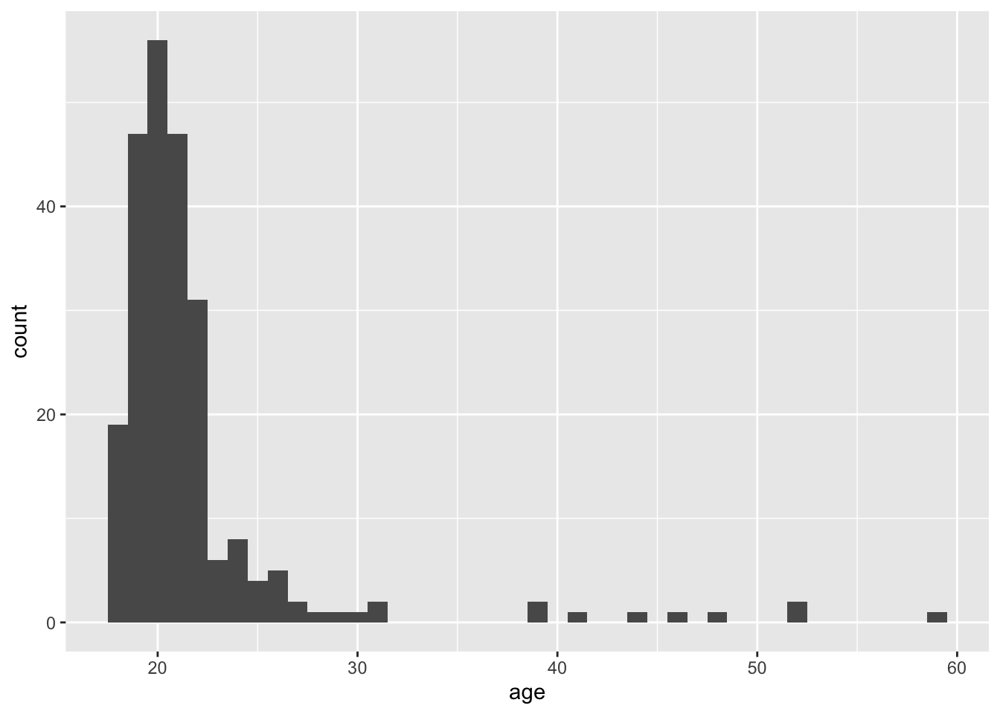
## Min. 1st Qu. Median Mean 3rd Qu. Max. NA's
## 18.00 19.00 20.00 21.79 22.00 59.00 4## [1] 5.56There is strong positive skew, with most students aged 18–22, but a long upper tail of ages ranging up to nearly 60. The mean (21.8 years) is most affected by the outliers, and the median (20 years) is probably a more useful indicator of location. The skew causes the mean to be larger than the median. The college has mostly younger students, but also some older returning and non-traditional students. Removing outliers would misrepresent the sample, by omitting those older students. They should be removed only if there is reason to examine the subgroup of younger students, perhaps aged up to about 32.
3.1.5 Distribution of exercise scores
Again the URL in the code book does not exist anymore but you can download the article dircetly from Gaston Godin’s web page.
Visualize the distribution of exercise scores, which are calculated as 9×strenuous + 5×moderate + 3×light, where students report the number of times per week they engage in strenuous, moderate, and light exercise. There is an extreme outlier. What would that extreme value mean? Would it make sense to delete it? Explain. If you do delete it, what happens to the standard deviation? Test your prediction.
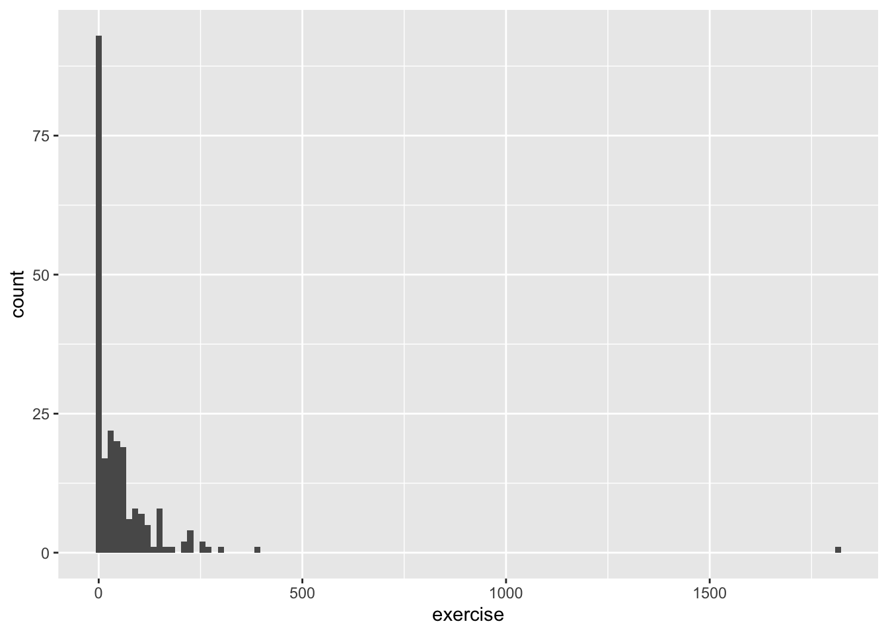
## Min. 1st Qu. Median Mean 3rd Qu. Max. NA's
## 0.00 2.75 22.00 54.78 61.00 1810.00 23## [1] 135.28There is considerable positive skew. Most students report relatively little exercise, but the right tail pulls the mean (54.7) way above the median (22). The extreme outlier of 1,810 corresponds to engaging in strenuous exercise 201 times per week, which is hardly credible. Most likely, the student didn’t understand the question, made an error, or gave a non-serious answer, so there is good reason to delete this outlier, which would decrease the SD. If it is deleted, s decreases from 135 to 64.7. As always, if you delete an outlier report how, when, and why the descision was made to remove it.
We can easy find the number of the record (= row) of this outlier when we in the RStudio data browser the column exercise are sorting from high to low.
> outlier <- college_survey1$exercise[138]
> college_survey1$exercise[138] <- NA
> ggplot(college_survey1, aes(exercise)) + geom_histogram(binwidth = 10, na.rm = TRUE) # different bindwidth as before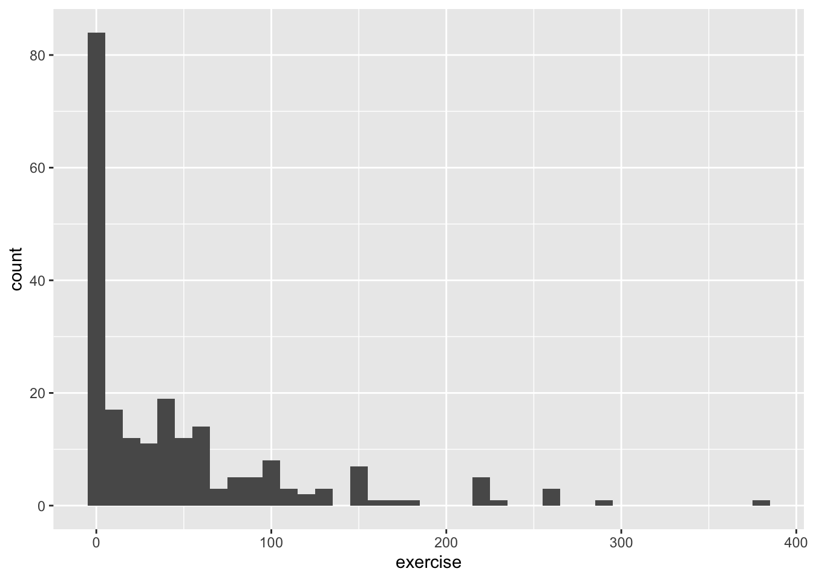
## Min. 1st Qu. Median Mean 3rd Qu. Max. NA's
## 0.00 2.50 20.00 46.77 61.00 385.00 24> s <- round(sd(college_survey1$exercise, na.rm = TRUE), 2)
> college_survey1$exercise[138] <- outlier # restore outlier to get original data frame
> s## [1] 64.723.1.6 Distribution of Raven scores and GPA
Visualize the distribution of Raven scores (Raven_Score), which are the proportion correct on a short 8-item IQ test. Next, visualize the distribution of GPA. Compare the two distributions. Why might they differ in shape?
By now this should already a routine operation.
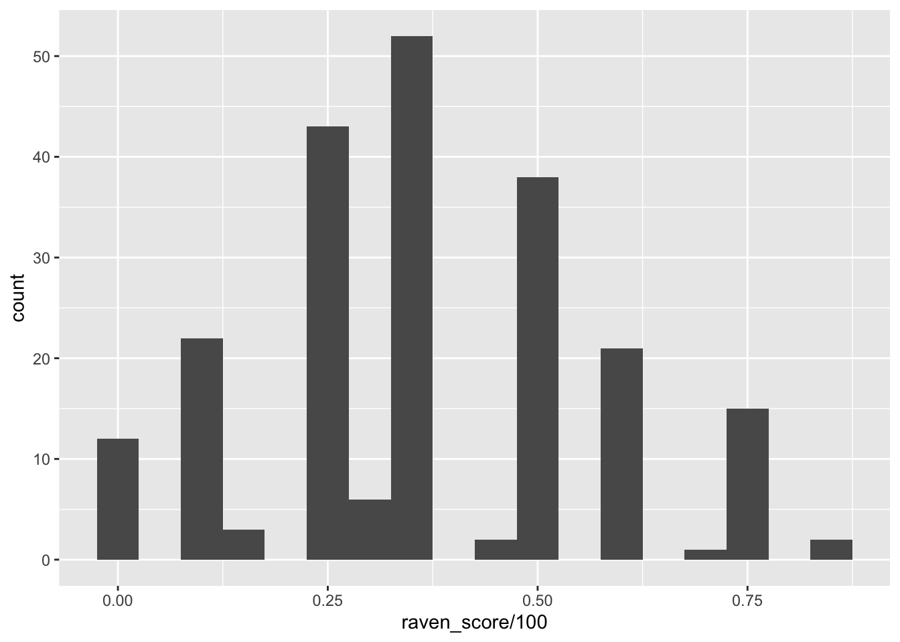
## Min. 1st Qu. Median Mean 3rd Qu. Max. NA's
## 0.0000 0.2500 0.3750 0.3771 0.5000 0.8750 26## [1] 0.2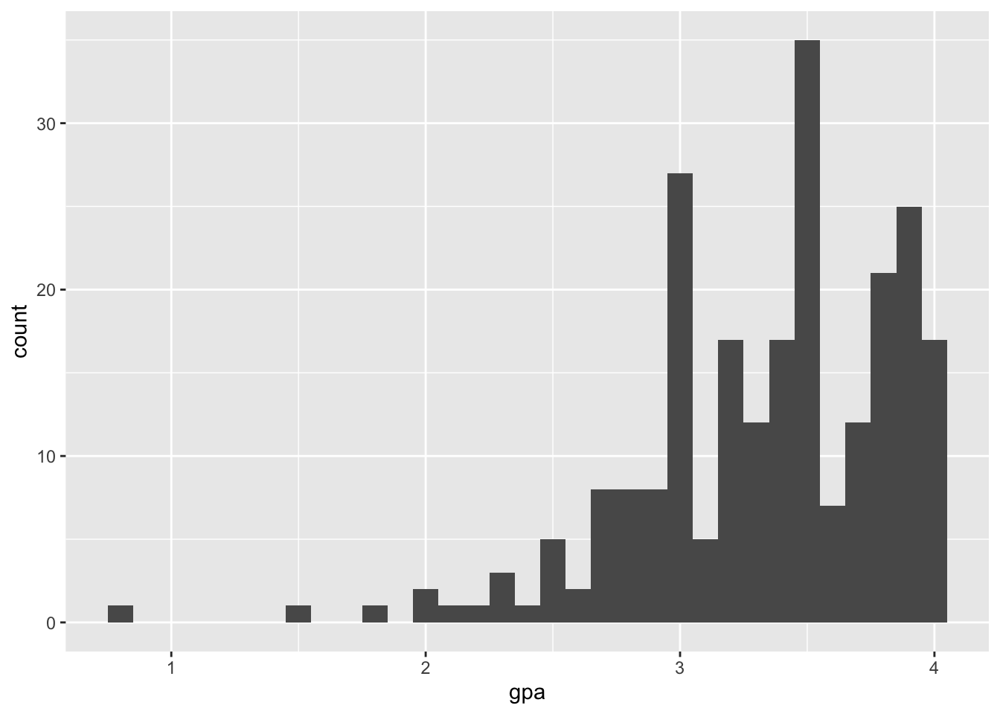
## Min. 1st Qu. Median Mean 3rd Qu. Max. NA's
## 0.800 3.000 3.400 3.343 3.800 4.000 6## [1] 0.51Raven IQ Scores are relatively normally distributed. The mean is .377, median is .375, and standard deviation is .199. In contrast, GPA is very strongly negatively skewed, with scores stacked up near 4.0, the top of the GPA scale. A long tail extends down to very low values of GPA. The mean is 3.34, median is 3.40, and SD is 0.51. Different variables can have different distributions, even for the same sample. However, we expect IQ and GPA to be related, so it’s perhaps surprising that their two distributions are so different. The GPA distribution, with most of the scores concentrated in the 3.5–4.0 range, suggests that the testing is not sufficiently challenging to distinguish among students in the upper parts of the distribution. You may have heard of grade inflation occurring in the last one or two decades. Search online for “college grade inflation”, or similar, and you should easily find statistics describing a dramatic increase in the proportion of A grades in recent years, and interesting discussion about likely causes and consequences.
3.1.7 Presentation of the gender distribution
In this data set (of the original Excel file, pb), Gender is coded as female = 1 and male = 2. ESCI calculates that the mean is M = 1.28 for Gender. Does this make sense? How might you better summarize gender in this sample?
No! It doesn’t make sense to calculate a mean for data on a nominal scale. It’s often convenient to represent nominal data with numerical codes, but it’s important to remember that these codes have no numerical meaning, and thus calculation of most descriptive statistics doesn’t make sense. Nominal data can be summarized with frequencies (175 females and 68 males) and relative frequencies (72.0% females and 28.0% males).
This important difference between numbers and nominal data is in the itns data set already considered and therefore changed. We have two variables Females and Males. These so-called factor variables require a different proceeding:
> n <- table(college_survey1$gender)
> res <- cbind(n, round(prop.table(n) * 100, 1))
> colnames(res) <- c("Count", "%")
> res## Count %
## Female 175 72
## Male 68 283.2 Put some indidual scores in context
3.2.1 Female student on the Ravens measure
One female participant achieved a score of .875 on the Raven measure. What is her z score?
We can calculate the z score manually with the formula (x - mean(x)) / sd(x) or use the command scale()
(x-mean(x)) / sd(x) is important because the precedence of the operators in x-mean(x) / sd(x) would be wrong. We also have to remove the NA values.
> M <- mean(college_survey1$raven_score, na.rm = TRUE)/100
> s <- sd(na.omit(college_survey1$raven_score))/100
> (0.875 - M)/s## [1] 2.499761With X = .875, M = .377, s = .199 we calculate z = 2.50. This student is tied for top score in the sample.
All these commands are using vectors, e.g. the take all values of the column raven_score. In inspecting the data frame we notice that .875 is the first value. So we can also use the command scale(). To prevent to print out the long list of values we write scale()[1]
## [1] 2.4997613.2.2 The same student in GPA
The same female participant has a GPA of 3.9. What is her z score for GPA? On which measure (GPA or Raven) is she more unusual?
## [1] 3.9## [1] 3.343038## [1] 0.5083248## [1] 1.095681With X = 3.9, M = 3.34, s = 0.508, we calculate z = 1.10. This participant stands out more on the IQ measure (z = 2.50) than on GPA (z = 1.10).
3.3 Compare positive & negative affect of a participant
One participant scored a 2 for Positive Affect and a 2 for Negative Affect. Even though these raw scores are the same, they are very different within the context of the whole study. Express both as z scores and percentiles. Which score is more unusual?
Sorting either the column positive_affect or negative_affect we see that the particpant of row 154 is the one who scored a 2 for Positive Affect and a 2 for Negative Affect. But we should not use the direct
3.3.0.1 Positive Affect
## [1] 2## [1] 3.433404## [1] 0.7135492## [1] -2.0088373.3.0.2 Negative Affect
## [1] 2## [1] 2.322043## [1] 0.7530565## [1] -0.42764733.3.0.3 Comparison: Positive with Negative Affect
For positive affect: X = 2.0, M = 3.43, s = 0.71 and we calculate z = −2.01. For negative affect: X = 2.0, M = 2.32, s = 0.75 and we calculate z = −0.43. The positive affect score is more unusual than the negative affect score, within this sample.
3.3.1 Determine outliers
A z score of more than 3 or less than −3 is sometimes considered an outlier. By this standard, would the participant who is 59 qualify as an outlier for age? Would the participant who reported an exercise score of 1,810 qualify as an outlier for exercise?
## [1] 59## [1] 21.78661## [1] 5.555721## [1] 6.69821## [1] 1810## [1] 54.78182## [1] 135.2829## [1] 12.97443For age, X = 59, M = 21.8, s = 5.56 and we calculate z = 6.69, which is an extreme outlier! For exercise, X = 1,810, M = 54.8, s = 135.3 and we calculate z = 12.97, which is a very extreme outlier!
3.4 Religious Beliefs
Let’s look at some data about religious beliefs. The religious_belief data set on the book website has data from a large online survey in which participants were asked to report, on a scale from 0 to 100, their belief in the existence of God.
3.4.1 Estimate the distribution
First, sketch the distribution you think this variable will have. Consider the relative frequencies of people you expect to strongly believe in God (high end of the scale), to strongly not believe in God (low end of the scale), or to be unsure (middle of the scale).
## Min. 1st Qu. Median Mean 3rd Qu. Max.
## 0.00 2.00 50.00 49.39 100.00 100.00The lowest 25% percent do not believe in god and the highest 25% do believe completely (100%) in god.
I predicted an approximately flat distribution, with similar frequencies of strong, moderate, and non-believers.
3.4.2 Graphic of the religious data
Now make a picture of these data and describe it in words.
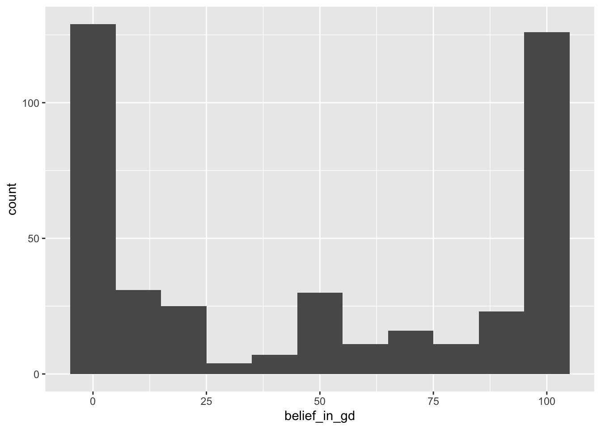
The distribution is clearly bimodal: Most respondents answered 100 (strongly believe in God) or 0 (strongly disbelieve in God), and relatively few participants gave scores between the extremes. My prediction was quite wrong. This is a good illustration of multiple peaks (two in this case) indicating distinct groups of participants.
3.4.3 Evaluate the different location parameters
Does the mean do a good job representing this data picture? Does the median? The mode? Why do all these measures of location seem to fail?
With such a strongly bimodal distribution, none of the three measures of location does a great job of representing the distribution. Both the mean (48.2) [49.39] and median (50) represent an intermediate level of belief that is actually rare; reporting only one mode would be misleading. The best non-graphical strategy would be to describe the distribution in words and report the location of each mode: one at 0 level of belief, the other at 100.
3.5 Working with the oiginal Excel data set
3.5.1 Load data set from Excel file
In RStudio there are several options to import data files via the menu available. I generally prefer .csv files using the option From Text (readr). readr is a package included in tidyverse.
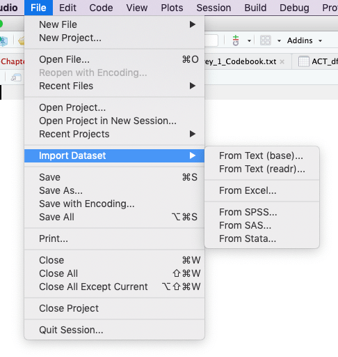
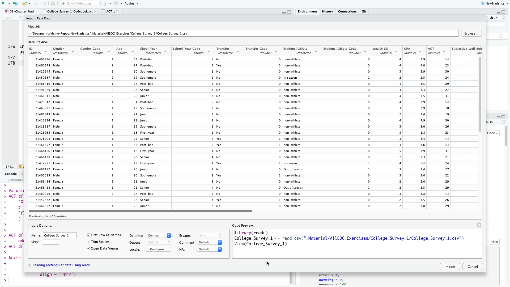
In the import data window you can preview the first 50 data. The R program code is displayed in the bottom right section of the window, so that you can automate this step. This is not only time saving but also necessary for better reproducibility. As we already have loaded readr and do not want to display the dataset in RStudio automatically we only need the second line of the program code.
## Parsed with column specification:
## cols(
## .default = col_double(),
## Gender = col_character(),
## Shool_Year = col_character(),
## Transfer = col_character(),
## Student_Athlete = col_character(),
## Exercise = col_character(),
## Raven_Score = col_character()
## )## See spec(...) for full column specifications.After loading the dataset you will see in the console window the parameters readr has used to parse the column specification. This all is done normally correctly, automatically, and hassle-free.
But it is import to check these parsing decisions made by readr. Ignore the strange [31m and [39m strings in the printed output. These are the internal characters for changing text to red color. This is the way readr warns you that there are character columns in the table. You can convert them to factor variable but this is with extra columns for Gender (Gender_Code), Schoolyear (Schoolyear_Code), and Student_Athlete (Student_Athlete_Code) already done.
Remains Exercise and Rave_Score. Both columns contain numbers and should display like the default mode in the format col_double() which is the R code for double precision floating point numbers. We have to inspect these two columns more in detail: Use the command View(college1) from the console or display the data set by choosing it form the tab Environment on the right upper window.
The reason for the wrong format is that the variable Exercise contains ‘-’ and Raven_Score has ‘%’-signs added after the numbers. I will deal with this problem later, when we are going to use one of this variables.
During the inspection of the data set I noticed two other minor problems:
- The last few rows — from row 244 – 247 are emtpy, respectively filled witn NAs (“not available”). We may delete these rows.
- There is a typo in the column name
Shool_Yearwhich should beSchool_Year.
3.5.2 Problems with the Exercise variable
With the Exercise variable we cannot use the above ggplot2 commands to display the histogram. Try it out and you will get the following error message:
The reason is a wrong format of the Exercise variable. Instead of numbers there are some dashes in some of the records. But the dash ‘-’ is a character, so the whole column is convert to a character variable.
The meaning of the dash sign is that there was no exercise reported. To distinguish it from NA (= not available) which means the student did not answer the question, no exercise was coded unfortunately with a ‘-’ instead of a 0. For questions of reproducibility it is always a good idea not to change the original data set. Therefore I will create a new variable Exercise_Code, convert all dashes to 0 and format the column as.double().
> college1$Exercise_Code <- college1$Exercise # copy column
> college1 <- college1[, c(1:18, 24, 19:23)] # reorder Exercise_Code after Exercise
> college1$Exercise_Code[college1$Exercise_Code == "-"] <- 0 # set all '-' to 0
> college1$Exercise_Code <- as.double(college1$Exercise_Code) # convert column from character to double## Warning: NAs introduced by coercionThe last line spits out the message “NAs introduced by coercion”. This is a kind of error message saying that some number conversion did not succeed. Instead converting number strings to numbers NAs were created. To find this error was a little bit tricky but finally it turned out that the extreme outlier in row 138 with 1,810.00 was the problem: The comma in this big figure is interpreted as a character.
We could change this unique value but I will provide a general solution taken from StackOverflow. We have to delete the “destroyed” column “Exercise_Code” and start again with the conversion process. In the real praxis we would change simply the code junk above and run the whole program again.
> college1 <- college1[, c(1:18, 20:24)] # delete column `Exercise_Code`
> college1$Exercise_Code <- college1$Exercise # create it again
> college1 <- college1[, c(1:18, 24, 19:23)] # reorder Exercise_Code after Exercise
> college1$Exercise_Code[college1$Exercise_Code == "-"] <- 0 # set all '-' to 0
>
> ## and now the new line: deleting commas and converting to double precision floating point numbers
> college1$Exercise_Code <- as.double(gsub(",", "", college1$Exercise_Code))3.5.3 Problems with the Ravens_Score
Here we are confronted with a similar problem. The “%” sign is a character. So we have to recode this variable to get rid of the %-sign and to convert the variable to a double precise floating number. This is similar procedure as we have already done with the Exercise variable.
3.5.4 Gender data
Here I will reproduce the quote from the book
In this data set (of the original Excel file, pb), Gender is coded as female = 1 and male = 2. ESCI calculates that the mean is M = 1.28 for Gender. Does this make sense? How might you better summarize gender in this sample? (p.69)
No! It doesn’t make sense to calculate a mean for data on a nominal scale. It’s often convenient to represent nominal data with numerical codes, but it’s important to remember that these codes have no numerical meaning, and thus calculation of most descriptive statistics doesn’t make sense. Nominal data can be summarized with frequencies (175 females and 68 males) and relative frequencies (72.0% females and 28.0% males). (p.506)
We can use the same program lines as we did with the college_survey1 data frame.
> n <- table(college1$Gender)
> res <- cbind(n, round(prop.table(n) * 100, 1))
> colnames(res) <- c("Count", "%")
> res## Count %
## Female 175 72
## Male 68 28We can also convert the variable Gender_Code or even better the variable Gender_Code into a factor variable. This is done with the forcats package which is already loaded as part of the tidyverse.
When you hover with the mouse in the RStudio data browser over the column “Gender_Code” you will see the small message “column 3: numeric with range 1 - 2”. After running the following code try it again und you will see “column 3: factor with two levels”.
## [1] 1 2 1 2 1 2 2 1 1 2 1 2 1 1 1 1 1 1 1 2 1 1 2 2 1 1 2 1 1 1 1 1 2 1 1 2 1 1 1 1 2 2 2 2 1 2 1 1 2 1 2 1 1
## [54] 2 1 1 1 1 1 1 1 1 1 1 1 1 1 1 2 1 1 1 1 2 1 2 2 2 1 1 1 2 1 2 1 2 2 1 1 1 1 1 1 1 1 1 1 1 1 1 1 1 1 1 1 1
## [107] 1 1 1 1 1 1 1 1 1 1 1 1 1 1 1 2 2 1 1 2 1 1 2 2 1 2 1 2 1 1 1 2 1 1 1 2 1 2 2 2 2 1 1 2 1 2 1 1 1 1 1 2 1
## [160] 1 2 1 1 1 1 1 1 1 1 1 1 1 1 1 2 1 1 1 1 1 2 1 2 1 2 1 1 2 1 1 1 1 1 1 2 1 1 1 1 1 1 2 1 1 2 2 1 1 1 1 1 1
## [213] 2 2 1 2 1 2 1 1 2 2 1 2 1 1 1 1 1 1 1 2 1 1 1 1 2 1 2 2 2 2 1
## Levels: 1 2> # remove first '#' from next line to get code working View(college1) # opens the data set in the RStudio data
> # browserWe have successfully converted the numeric column into a categorial variable with 2 levels. All calculations with numbers will fail.
## Warning in mean.default(college1$Gender_Code): argument is not numeric or logical: returning NA## [1] NA